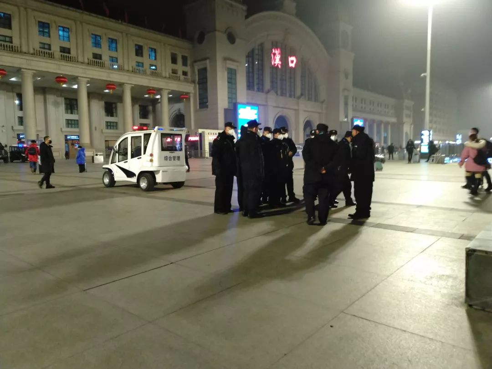
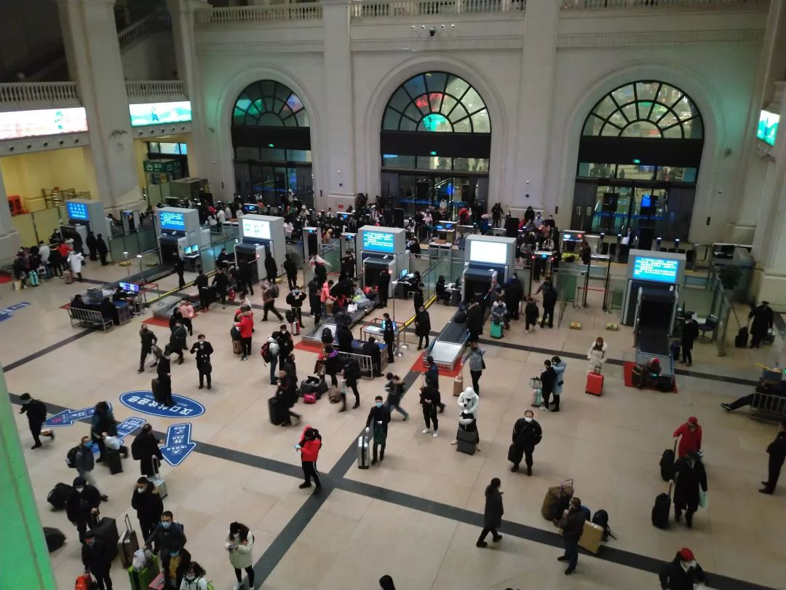
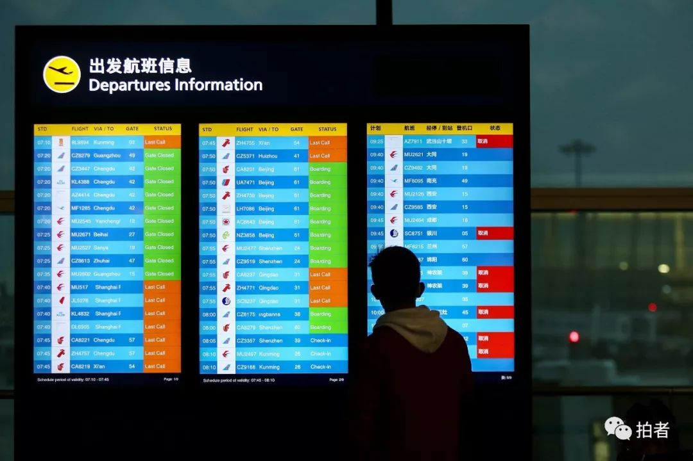

实地探访 | 封城的第一天，武汉怎么样了？
原文链接 备份链接 作者 | 第一财经 吴绵强 周芳 陈益刊 编辑 | 张富贵 为了遏制新型冠状病毒感染的肺炎扩散，按照武汉市新型冠状病毒感染的肺炎疫情防控指挥部通告，自1月23日10时起，武汉全市城市公交、地铁、轮渡、长途客运暂停运营； …
***** *****
*****
*****他们很想回家，和孩子最近一次见面还是暑假。但谁也不敢回去。“万一有什么事，也不能把病毒扩散到别处，是不是？” *****

6时35分，汉口站广场上，一队警务人员正在开会。 新京报记者 海阳 摄
文 | 新京报记者 海阳 向凯 周小琪 杜雯雯 王双兴 祖一飞 王翀鹏程 魏芙蓉 肖薇薇 付子洋 刘名洋
编辑｜陈晓舒
►本文约5811字，阅读全文约需12分钟
距离农历春节还有两天，江城武汉的肺炎疫情牵动着所有人的神经。
1月23日凌晨2时许，武汉市新型冠状病毒感染的肺炎疫情防控指挥部发布第1号通告：自2020年1月23日10时起，全市城市公交、地铁、轮渡、长途客运暂停运营；无特殊原因，市民不要离开武汉，机场、火车站离汉通道暂时关闭。
1月23日19时，湖北省再次召开新型冠状病毒感染的肺炎疫情防控工作新闻发布会。湖北省文化和旅游厅副厅长徐勇在会上表示，即日起，武汉市经营性文化娱乐场所暂停营业。
武汉市市长、武汉市新型冠状病毒感染的肺炎疫情防控指挥部指挥长周先旺称，自从新型冠状病毒感染的肺炎疫情纳入“乙类管理、甲类控制”后，武汉全市上下就进入“战时状态”。
“封城”的消息迅速扩散开来。有人赶在10点前离开了武汉，但更多的人愿意留守在这里——“也不能把病毒扩散到别处，是不是？”；有人开始去超市抢购，但武汉商务局也开始行动——他们已接到多名市民关于蔬菜价格偏高的举报，并表示武汉食物储备货源充足并且平价，市民无需担心。
发热门诊依旧排着长龙。武汉市卫健委今日下午回应称，目前全市发热患者增多趋势明显，确实存在发热门诊就诊排长队、留观床位紧张的现象。为此，市指挥部紧急研究决定，征用相关医院作为发热患者定点诊疗医院。另外，武汉市计划紧急调运3万人份核酸检测试剂盒发放到指定检测机构，目前已下发6000人份。
封城首日，这座城市与所有人的连结变得更加密切。
汉口火车站警务人员：还是和以前一样，大家都好好干
*** ***
***
凌晨3时许，汉口火车站的售票厅广场依然空旷，只有三四名名旅客拖着行李箱，缓慢向售票厅走去。
一小时后，广场上的人多了起来，不少人连走带跑前往售票厅。四个“售票改签”窗口开启服务，每个窗口前都排着十多个乘客。今年25岁的山东威海人陈炳（化名）扶着黑色的拉杆箱正在排队。

俯瞰汉口站一楼大厅。 新京报记者 海阳 摄
陈炳在武汉从事IT工作，原本买了1月24日的票回家。今晚，他在睡眠中被“封城”消息惊醒，当下决定改签回家。
陈炳黑色的行李箱只收拾了一些值钱的贵重物品，包括显卡和自己写的程序手稿。他打不到车，拦了一辆外卖小哥的电瓶车，“我提出500元送我去汉口站，他一口答应。”
陈炳提着箱子坐在外卖小哥的后座，在30分钟内从华中科技大学到达汉口站。“飞驰”，他如此形容自己的这段路程。
广场上，旅店老板田华（化名）一个松松垮垮的黑色口罩挡住口鼻，念叨着，“要不要住宿？要不要住宿？”平日里，她并不会在凌晨四点来到汉口站的广场。但今天两位客人提前退房，空了两间屋子。
“我不想回去，不想给他们添麻烦。我知道我没什么，但是万一呢？我这里一个人过年也自在。” 她说。
凌晨5时，广场上已人来人往。在底楼大厅东北角落，20岁高铁乘务员刘爽（化名）正在吃早饭，她的排班工作日原本是22日、23日、24日三天，就算高铁停止离汉客流，也不过是早放了一天假。她本就没有回家过年的打算，“实在太远啦，懒得回去。”
进站口的喇叭重复播放着录音，提醒旅客留意自己的体温，如有异常，及时与站内的体检人员联系。十几位身着制服的警务人员围聚在一起，一位年长的警务人员正在布置着今天的安保任务，“还是和以前一样，大家都好好干。”
片刻之后，警务人员们散开，奔赴各自的岗位。一警务人员表示自己不便接受采访，只说“祝各位旅客身体健康，不要生病吧！”

1月22日，武汉汉口火车站，佩戴口罩的旅客。
离开的人：好好观察一下，如没异常再和孩子们团圆
**********
“封城”消息发布时，住在江汉区的李丽和丈夫还在睡梦中，被身在广州儿子的一通电话叫醒，“让我们马上起床去机场。”
李丽夫妇是武汉人，儿子在广州工作、结婚生子后，便长期随儿子住在广州。40天前，他们回到武汉，按原本的计划，俩人会搭乘今天下午的航班，去广州和儿子过年。封城的消息传来，儿子给他们重新订了两张上午九点的机票。
凌晨4时许，李丽和丈夫戴着口罩，匆匆打包好行李，带上了给儿子熏好的腊肉，到小区门口等了半个小时，打到一辆前往机场的车。

1月23日，武汉天河国际机场，大量航班被标红，显示取消。
天还未亮，武汉天河机场出发层，车辆已经增多起来，高峰时几乎每一秒钟都有一辆车到达。在航站楼门口，立有一张体温检测提示牌：“进入航站楼请进行体温检测，请配合。”
机场大厅已经挤满了想要出城的旅客。新京报记者看到，每个值机柜台前都站满了人，有的队伍排了近百米长。所有工作人员、乘客都戴好了口罩。
值机柜台前，有工作人员负责维护秩序，要求乘客按航班起飞时间先后进入值机区域排队，同时不断用扩音器播报通知，宣布10点以后离开武汉的航班取消，请顾客办理退票手续。

1月23日，武汉天河国际机场，旅客们在人工柜台前排长队咨询退票与改签事项。
为了赶在“封城”前离开武汉，老家在银川的张明明和丈夫买了一张前往温州的机票。她准备先到温州中转，再从温州回银川，全程大概十二个小时。
9时许，武汉天河机场官微发布公告称，当日计划进出港航班共600架次。截至上午9时，已正常起降45架次，因故临时取消进出港航班199架次。机场公告中还提到，南航上午10时之后的所有航班已全部取消，其他航空公司的航班正在调整。
在候机厅，几位医务人员穿着白大褂、戴着帽子和口罩待命，多位清洁工不停地在对座椅、电梯扶手、地面进行保洁和消毒。一位清洁工说，从20日开始，他们每天都要对机场各个位置，尤其是厕所，进行三次以上的消毒。

1月23日，武汉天河国际机场，候机厅内配有医务人员。
10点50分，李丽的航班抵达广州白云机场，按照规定，所有从武汉飞来的乘客都要进行体温检测。李丽和乘客们被摆渡车拉到露天的体温检测点，身着防护服、戴着护目镜和口罩和医务人员用红外线检测仪，挨个进行测量。
幸运的是，李丽和丈夫的体温没有异常，他们商量好，出机场以后，先不去儿子家，在外面洗完澡、把衣服消好毒，再量几天体温，好好观察一下，如果没有异常，再去和孩子们团圆。
发热门诊：病床不够，医院紧急腾挪
**************
距离华南海鲜市场2公里多的红十字会医院，是武汉7家指定收治新型肺炎疑似及确诊患者的医院之一。
从1月23日开始，体温超过37.3度的患者被收治进院。护士在大厅入口的分诊台为每名患者测体温及血氧浓度，之后患者再进行挂号、登记，最后才是就诊。

1月23日下午，武汉红十字会医院门前。新京报记者 向凯 摄
即便如此，一楼的发热门诊大厅早已挤满等候许久的病患和家属，诊室门口也大排长龙。人群中拥挤憋闷，不少人蜷坐在自己带来的小凳上。
左边的输液室门口挂着写有“黄区”二字的牌子，三四间房间内坐满了输液的人，还有人在吸氧。与之相对，走廊尽头的留观病房上写着“红区”，那里是原医院急救中心，大概10张床位，住满了病患。对于黄区、红区的区别，一名医生表示“是（给患者）不同的救治通道”。
李女士5天前把丈夫送进来时，没有床位，被安置在病房门口，当晚病房腾出空床后才搬进去。
在院内，新京报记者看到一张1月22日发出、落款为红十字会医院的通告。通告显示，“接上级通知，我院暂定为发热患者定点诊疗医院，即日起，门诊只接待体温超过37.3℃发热患者，其它专科均停诊，非发热患者请到其它医院就诊。”据李林介绍，医院其它科室很多医生护士都被调到发热门诊进行支援。

红十字会医院的“抢救室”门上标有“红区”字样。新京报记者 向凯 摄
在一楼分诊处，一名“全副武装”的医生告诉新京报记者，他是今天才从其它医院调来支援的。“目前病床确实不够，医院已经把其它科室的所有病人转到其它医院了，收拾病房，消毒，预计下午6点会腾出部分病房。”这名医生说。
1月23日，武汉市卫健委确认了全市发热门诊排长队、留观床位紧张的现象，表示将征用相关医院作为发热患者定点诊疗医院。
核酸试剂盒：厂商都在加急生产，很快会发到其他的医院
**************
对于许多武汉市民来说，这种来势汹汹的未知病毒，在刹那间袭击了他们的生活。
杨洁（化名）64岁的父亲疑似感染新型冠状病毒导致的肺炎，但因排队等候医院核酸试剂盒的患者太多，目前仍在急诊室。
一位武汉大学人民医院的医护人员告诉新京报记者，各大定点医院确实普遍存在试剂盒不足的情况。
“目前，试剂盒只供应到第一批定点医院，厂商都在加急生产，很快会发到其他的医院”。一位不愿具名的武汉某医院高层说。
1月23日晚间，武汉市卫健委解释称，前期对疑似病例的样本检测流程是：首诊医院通过规范的预检分诊、结合临床检查、实验室检查和胸部影像检查，经专家组会诊后确认疑似病例并采样，由辖区疾控中心将样本转运到市疾控中心，市疾控中心转运到省疾控中心进行核酸检测，每天可检测样本200多份。预计从采样开始到结果返回，当前约需要2天左右的时间。而在1月16日之前，湖北省没有试剂盒，还需要送到国家指定的检测机构进行病毒分离和核酸检测，结果返回约需要3—5天。
目前，为提高检测速度，从1月22日昨天开始，武汉市市已指定各定点救治医院、发热定点诊疗医院的对口帮扶医院以及市疾控中心等具备相应防护级别的生物安全实验室开展相关样本的病原核酸检测工作（第一批共10家机构），预计全部运行起来每天可检测样本近2000份。为此，武汉市计划紧急调运3万人份试剂盒发放到指定检测机构，目前已下发6000人份。
“我老婆说看到医院也在积极的准备，其实也看得到，只是说现状而言的话，现在住不了院。 ”另一位疑似病例家属李明义说。没隔多久，他又发来一句：这座城市需要帮助。
留守武汉的人：“也不能把病毒扩散到别处，是不是？”
**************
不少在汉务工人员只能留守武汉，福建建瓯人范黎（化名）夫妻就是其中之一。
他们来武汉已十年，在江阳区经营着一家鸡排店。他说，从武汉回乡的高铁票一直票源充足，今早5点他醒来准备买车票，发现无法购买，便看到了“封城”的消息。
他早有预感。昨天，街道上的车辆、人流就明显少了许多。进出武汉的车辆要检查、进高铁站要测体温。防疫站还通过物业通知他9点前必须关店。
他们很想回家，和孩子最近一次见面还是暑假。但谁也不敢回去。“万一有什么事，也不能把病毒扩散到别处，是不是？” 范黎说。
留守在武汉的还有在洪山区工作的年轻人小陈，她原计划22日返回老家宜昌，但最终决定退票。
武汉高铁站，一名佩戴口罩的旅客正在候车。图/新京报拍者
1983年出生的谢大飞（化名）两个月前刚从广东来到武昌光谷附近的一家湘菜馆干活。疫情刚刚出现时，饭店的生意并没受到太大影响。但从1月20日，钟南山确认新型冠状病毒“人传人”之后，这家湘菜馆开始陆续接到顾客取消预定的电话。“我们总共有6间包房，取消了4间。大厅里80%的预定也都取消了。”
生意萧条，老板决定饭店提前放假。但谢大飞和妻子却选择了留在武汉。他说，没有抢到回乡的车票；也担心回乡后影响家人健康。“我们听人说，从武汉出去的人，回到老家也要自行隔离14天。”在湖南老家，谢大飞有两个孩子，大的14岁，小的3岁。
如今他居住的员工宿舍里，只剩他和妻子两个人。他从店里拿了电饭煲、炒锅还有一些大米，又从市场买了一条鱼、一些猪肉和几把青菜，“够吃两三天”。他原本想着吃完后再去买，但“封城”的消息后，他不敢出门了，“我现在就在发愁，再过几天我们吃什么呢？”
原计划23日晚回宜昌老家过年的张辉（化名）也因为“封城”临时改变计划。
张辉的爱人在武汉市的一家家具城工作，最近几天随着疫情的发酵，店里生意受到直接影响，“前天一个店的销售额只有400块钱，昨天就没有顾客了，今天也没有。”但店员依然要工作到大年三十下午才正式放假。
2003年SARS时期，张辉正在成都，外出时同车厢一位女士因为甲亢倒在厕所里，整节车厢被卸下来，隔离了四五个小时。现在，新型冠状病毒出现在他生活的武汉，张辉“听到隔离两个字就怕”，于是尽量不出门，每天待在家中。
23日上午，张辉手机里的各个微信群不停弹出消息，原本打算坐高铁回襄樊的朋友取消了高铁票，留在武汉；原本打算到云南旅行的妹妹也取消了机票，旅行社承诺把旅游行程保留一年。
超市“屯粮”：食物储备货源充足，市民无需担心
**************
今天早上，范黎早起出门买菜时，超市里已经人满为患，米、菜、油被一车车推出来。范黎和妻子一口气买了1000多块钱的菜，“应该能吃一个星期到十天”。
张辉听说小区里的水果店下午就闭店了，没吃午饭便赶下楼去储备水果，赶到时发现水果已经卖完了。转而去超市，蔬菜、水果区的商品基本被抢购一空。
23日11时许，新京报记者来到唐家墩路的中百仓储唐家墩购物广场店。这是一家占据了两层楼的大型超市。在蔬菜水果区域，记者看到绿叶类蔬菜已被购买一空，标示着娃娃菜、青丝瓜的货架上堆满莲藕；花菜、茄子、黄瓜的货架空空如也，只有些许碎屑；有一排货架上只剩下山药、荸荠和三四块红薯。
两位正在挑选荸荠的女顾客对新京报记者表示，她们在上午10点半赶到超市，想储备一些蔬菜，却发现来晚了。
正往货架上摆水果的超市工作人员解释，青菜是上午10点左右卖光的，“平时一整天都卖不光。”蔬菜热销也带动了水果的销量，是平时销量的近三倍。
旁边挑选豆角的老人称，“以前都是8块多一斤，现在要15.8元。”
不少武汉市民都感觉到价格有所变化。有网友在网上发布消息，“今天武汉的菜价明显上涨，武商超市一颗白菜售价三十几元，中百超市的蒜苗每公斤卖80元。”照片的发布者陈丽（化名）说，今天早上，武昌区水果湖附近中百超市的蔬菜几乎被抢空了，白菜的照片就是在武商超市拍摄的。
中百控股集团股份有限公司工作人员告诉新京报记者，并不存在蔬菜涨价情况。网传的“天价蔬菜”，是网友断章取义了。“今年蔬菜的进价本来就很贵，有几款蔬菜之前一直都是卖这个价钱。”该工作人员称。
武商量贩超市常青花园店工作人员也确认，蔬菜的价格没有上涨。
对此，武汉商务局工作人员告诉新京报记者，他们接到多名市民关于蔬菜价格偏高的举报，武汉食物储备货源充足并且平价，市民无需担心。
1月23日11时，武汉市政府新闻办公室微信公众号发布消息称，目前，武汉市有大宗商品、食品、医疗防护用品等储备充分，供应顺畅。广大市民不用恐慌，不必囤积，以免造成不必要浪费。
*洋葱话题*
*▼*
*你有亲友在武汉吗？*
*后台回复关键词*****“洋葱君” ，加入读者群****
***推荐阅读***

68岁新型肺炎患者：最后一次见老伴是她被推往ICU

直击肺炎疫情下的武汉、北京、香港

*********既然在看，就点一下吧****** *********
*********
原文链接 备份链接 作者 | 第一财经 吴绵强 周芳 陈益刊 编辑 | 张富贵 为了遏制新型冠状病毒感染的肺炎扩散，按照武汉市新型冠状病毒感染的肺炎疫情防控指挥部通告，自1月23日10时起，武汉全市城市公交、地铁、轮渡、长途客运暂停运营； …
原文链接 备份链接 文 | 王彦入 王丹妮 程静之 殷盛琳 李晓芳 周航 叶雯 曾宪雯 编辑 | 王珊 陶若谷 33岁的刘科戴上两层口罩独自走进地铁，夹杂在路人中间。像他这样拉着行李箱的人并不少见，彼此间默契地保持着距离。三天前，他刚刚从 …
原文链接 备份链接 记者/韩谦 魏晓涵 李佳楠 张帆 颜星悦 佟晓宇 梁婷 李东 郭慧敏 实习记者/陈威敬 龙天音 编辑/杨宝璐 宋建华 被确诊为河南省首例新型冠状病毒感染的肺炎患者，曾于1月8日在太康县人民医院治疗 国家卫健委消息，截 …
原文链接 备份链接 【财新网】（记者 黄蕙昭）一则半夜发布的“封城”通告惊动全国，也拉开武汉肺炎防疫之战新势态。1月23日凌晨两点，武汉市新型冠状病毒感染的肺炎疫情防控指挥部通报宣布，今日10时起，武汉公交、地铁、轮渡、长途客运暂停运 …
原文链接 备份链接 1月23日上午10时20分，湖北武汉汉口火车站进站口，工作人员向旅客解释离汉通道暂时关闭的情况。中青报·中青网记者 王嘉兴/摄 中青报·中青网记者 王嘉兴 1月23日凌晨2时，武汉市疫情防控指挥部发布通告，自2020 …